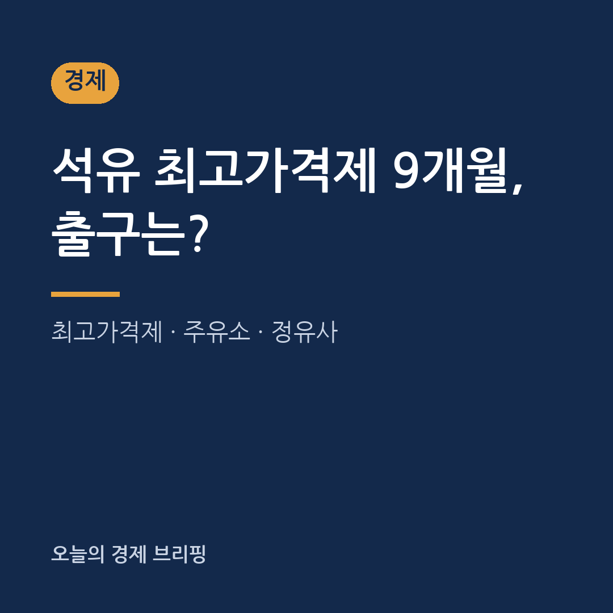
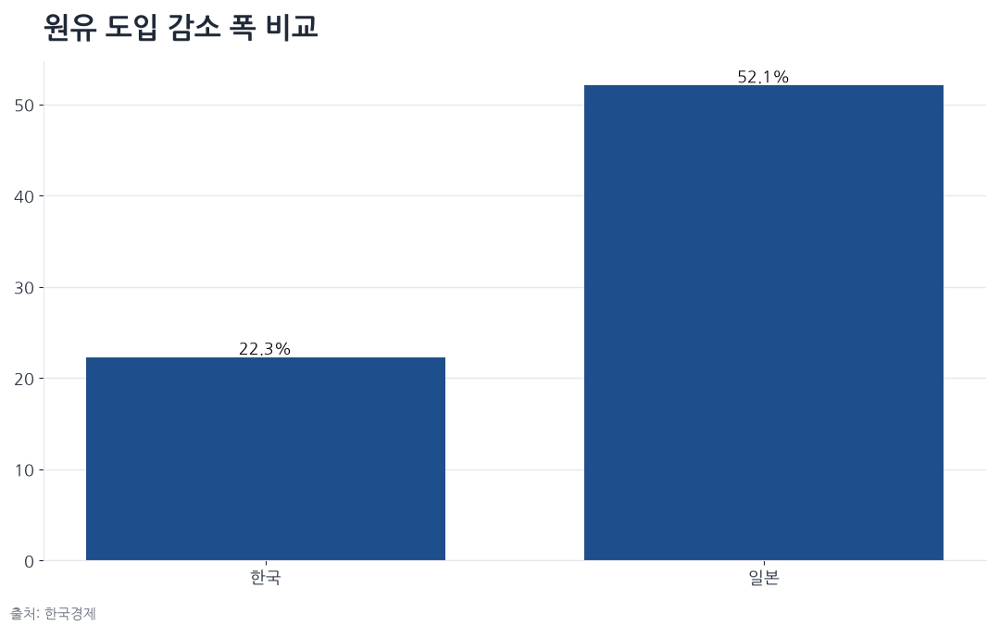

2026-11-24-1435-naver 발행 키트 · 이 페이지는 검색에 노출되지 않습니다.
제목
카테고리
경제태그
본문 (그림·표 포함)
휴대폰 블로그 앱에서는 그림이 같이 붙지 않을 수 있어요. 그때는 [글자만 복사] 후 아래 이미지를 저장해 [그래프1]·[표1] 자리에 첨부하세요.

요즘 주유소 앞을 지나갈 때마다 기름값이 왜 이렇게 안 움직이나 싶으셨던 분들 계실 거예요. 오늘은 그 배경에 있는 석유 최고가격제 이야기를 해볼게요.
▶ 석유 최고가격제, 벌써 9개월째예요
이 제도는 정유사가 대리점과 주유소에 넘기는 공급 가격에 위쪽 한도를 두는 방식이에요. 중동 전쟁의 여파로 호르무즈해협이 막힌 직후인 3월 13일부터 시작됐고, 국민 부담을 덜어 주려는 취지였어요.
그런데 시행 기간이 9개월로 길어지면서 부작용을 짚는 목소리가 커지고 있어요. 한국경제 보도를 보면 에너지경제연구원 분석을 바탕으로 이런 점들이 거론됐어요.
석유 최고가격제 부작용 정리
| 항목 | 내용 |
|---|---|
| 시행 시점 | 3월 13일부터, 9개월째 |
| 시장 기능 | 가격 신호가 약해져 수요 조절이 어려워짐 |
| 현물 공급 | 현물 시장 물량 감소 |
| 영세 주유소 | 대리점·영세 주유소 수익성 악화 |
| 형평성 | 고소득층에 혜택이 더 돌아가는 구조 |
출처: 한국경제
▶ 가격이 눌리면 왜 문제가 생길까요
가격이 인위적으로 눌려 있으면 기름을 아끼려는 신호가 약해져요. 비싸면 덜 쓰게 되는 시장의 원리가 제대로 작동하지 않는 거죠.
공급 가격 상한이 내려가면서 현물 시장에 나오는 물량도 줄었다고 해요. 그 여파로 대리점과 영세 주유소는 수익성이 나빠졌어요.
형평성 문제도 있어요. 차를 많이 모는 고소득층이 혜택을 더 크게 받는 구조라서, 취지와 달리 역진적이라는 지적이 나오거든요.
▶ 숫자로 보면 이래요
기사에는 전년 동기 대비 국내 휘발유 판매량이 1.5% 줄었다는 내용이 나와요. 원유 도입량은 한국이 22.3% 줄었고, 일본은 52.1% 줄었다고 비교했어요.

같은 위기 속에서도 일본 쪽 감소 폭이 훨씬 컸다는 얘기예요. 다만 이 숫자만으로 제도의 효과를 단정하기는 어려워서, 참고용으로만 봐 주세요.
▶ 정유사 손실 보전은 어떻게 되나요
가격 상한 때문에 생긴 정유사 손실은 나중에 정산해 주는 방식이에요. 3월부터 6월분을 먼저 정산하는 1차 절차가 진행 중이고, 다음 달 초 집행을 목표로 하고 있어요.
▶ 그럼 어떻게 끝내야 할까요
기사가 소개한 제안은 한 번에 풀지 말고 단계적으로 가격을 현실화하자는 거예요. 국제 유가와 재고 수준을 반영한 종료 기준을 미리 알려서, 시장이 대비할 수 있게 하자는 내용이에요.
갑자기 풀리면 기름값이 한꺼번에 튈 수 있으니, 기준과 시점이 예고되는지가 앞으로의 핵심 포인트예요.
▶ 덧붙여, 내년 한국 경제 전망도 나왔어요
같은 날 글로벌 투자은행 골드만삭스가 내년 한국 경제가 3%대 성장을 이어갈 거라고 내다봤어요. 구체적으로는 성장률 3.2%를 제시했고, 기준금리 전망의 상단은 3.5%로 제시했다고 해요.
외국계 IB 한 곳의 전망이라 하나의 참고 자료 정도로 보시면 좋겠어요. 세부 근거까지는 제가 확인하지 못해서 숫자만 전해 드려요.
골드만삭스의 내년 한국 전망
| 항목 | 수치 |
|---|---|
| 내년 경제성장률 전망 | 3.2% |
| 기준금리 전망 상단 | 3.5% |
출처: 연합뉴스
▶ 오늘 확인해 볼 것
주유소에서 쓰는 기름값은 이런 정책의 영향을 직접 받아요. 앞으로 정부가 종료 기준을 어떻게 발표하는지, 다음 달 초 정산이 예정대로 이뤄지는지 챙겨 보세요.
한 줄 정리하면, 가격을 누른 제도의 출구를 어떻게 설계하느냐가 관건이에요. 여러분 동네 주유소 가격은 요즘 어떠세요? 댓글로 알려 주세요.
이미지 (개별 복사·저장)
출처 (본문 맨 아래에 붙여넣기 권장)
- 한국경제, "석유 최고가격제 장기화 부작용 커져…단계적 출구 전략 찾아야", https://www.hankyung.com/article/202611246607i - 연합뉴스, 골드만삭스 "한국, 내년 3.2% 성장 전망…기준금리 상단 3.5%", https://www.yna.co.kr/view/AKR20261124112800008